Authors: Wei Fan, Kejiang Chen, Xiangkun Wang, Weiming Zhang, Nenghai Yu
Abstract: Data hiding is essential for secure communication across digital media, and recent advances in Deep Neural Networks (DNNs) provide enhanced methods for embedding secret information effectively. However, previous audio hiding methods often result in unsatisfactory quality when recovering secret audio, due to their inherent limitations in the modeling of time-frequency relationships. In this paper, we explore these limitations and introduce a new DNN-based approach. We use a flow-based invertible neural network to establish a direct link between stego audio, cover audio, and secret audio, enhancing the reversibility of embedding and extracting messages. To address common issues from time-frequency transformations that degrade secret audio quality during recovery, we implement a time-frequency loss on the time-domain signal. This approach not only retains the benefits of time-frequency constraints but also enhances the reversibility of message recovery, which is vital for practical applications. We also add an encryption technique to protect the hidden data from unauthorized access. Experimental results on the VCTK and LibriSpeech datasets demonstrate that our method outperforms previous approaches in terms of subjective and objective metrics and exhibits robustness to various types of noise, suggesting its utility in targeted secure communication scenarios.
Note:
- Cover Audio denotes the original cover audio used to conceal secret.
- Stego Audio (LSB) refers to stego audio produced using the traditional 8-bit Least Significant Bit (LSB) methods.
- Stego Audio (Freq. Chop) denotes audio where the method involved concatenating the upper frequency portion of the secret audio with the lower frequency portion of the cover audio to generate the stego audio. This method is a naïve baseline approach.
- Stego Audio (Hide & Speak) refers to stego audio created using a deep-learning-based steganography approach, described in [3]. Both the model for this method and our proposed model were trained using the same dataset to ensure a fair comparison.
- Stego Audio (Proposed) refers to stego audio created using our method.
| Datasets | Cover AudioGroundtruth | Stego AudioLSB | Stego AudioFreq. Chop | Stego AudioHide & Speak | Stego AudioProposed |
| VCTK 24kHz | 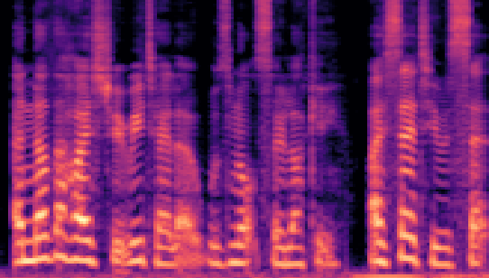 | 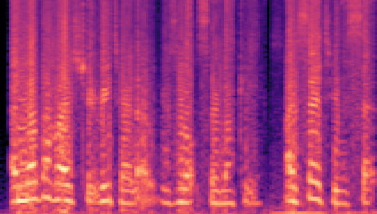 | 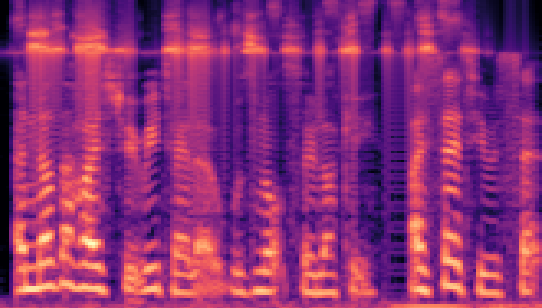 | 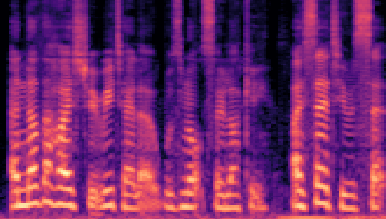 |
|
| LibriSpeech 16kHz | 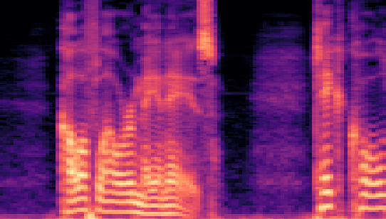 | 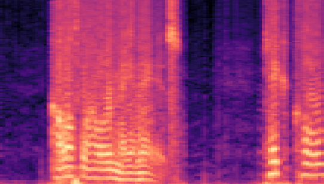 | 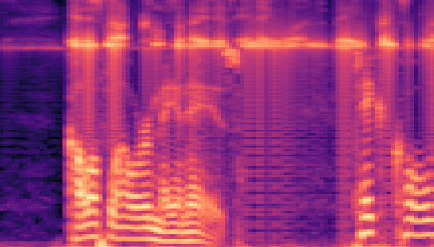 | 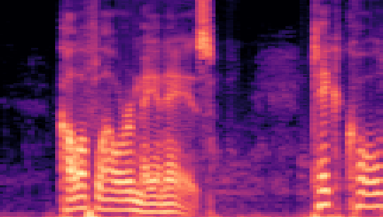 | 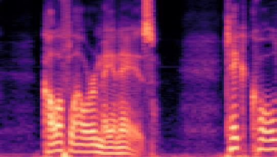 |
Note:
- Secret Audio represents the original secret audio.
- Recovered Secret Audio denotes the recovered audio that has been extracted from the stego audio.
| Datasets | Secret AudioGroundtruth | Recovered Secret AudioLSB | Recovered Secret AudioFreq. Chop | Recovered Secret AudioHide & Speak | Recovered Secret AudioProposed |
| VCTK 24kHz | 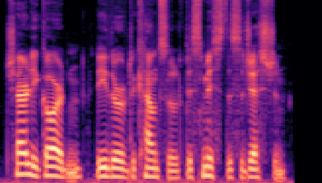 | 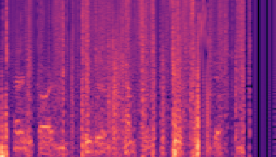 | 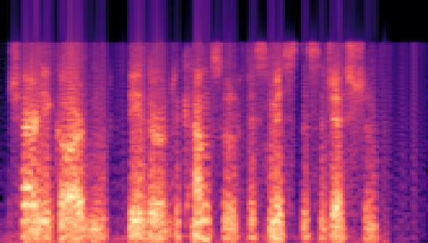 | 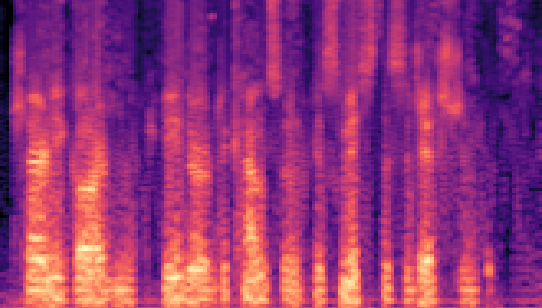 | 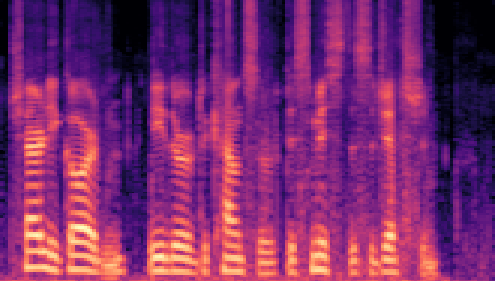 |
| LibriSpeech 16kHz | 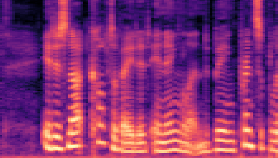 |

|
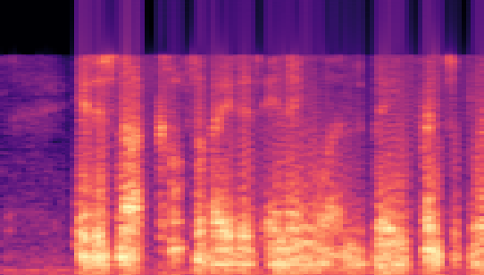 | 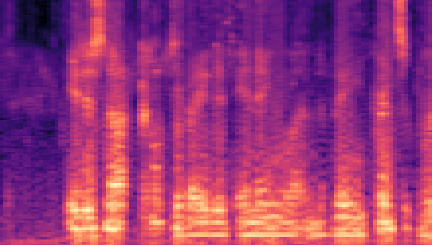 |

|